Flower JO
Online stores for flower shops that sell on WhatsApp and Instagram. One codebase and one database serve every shop.

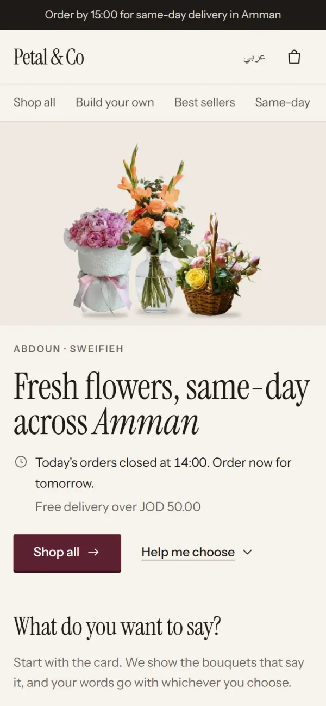
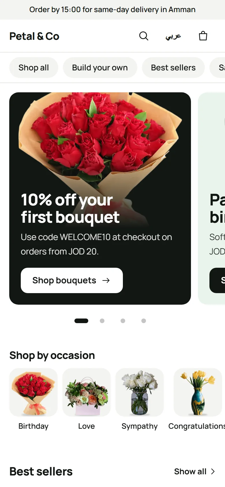
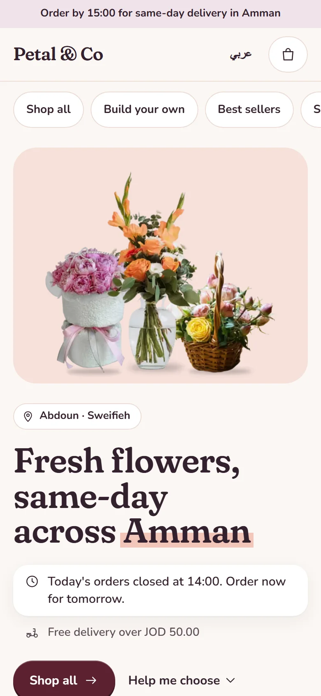
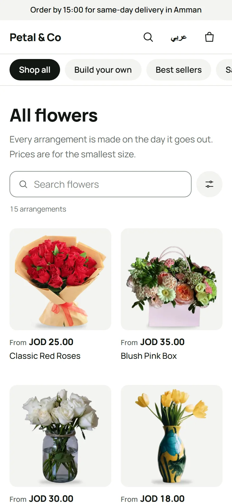
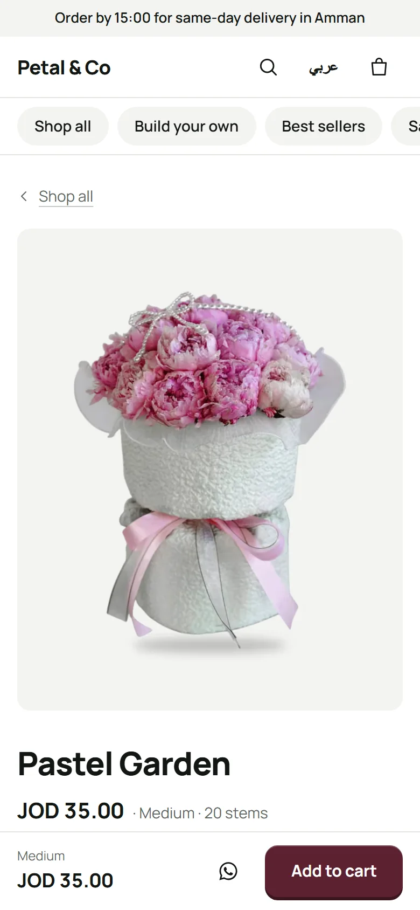

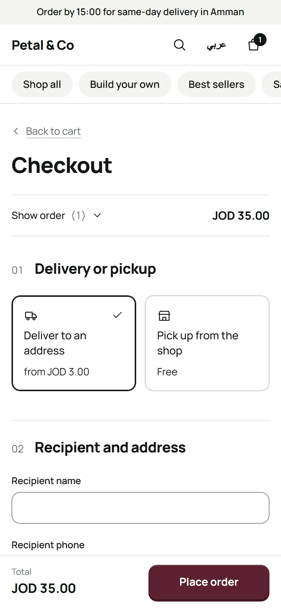
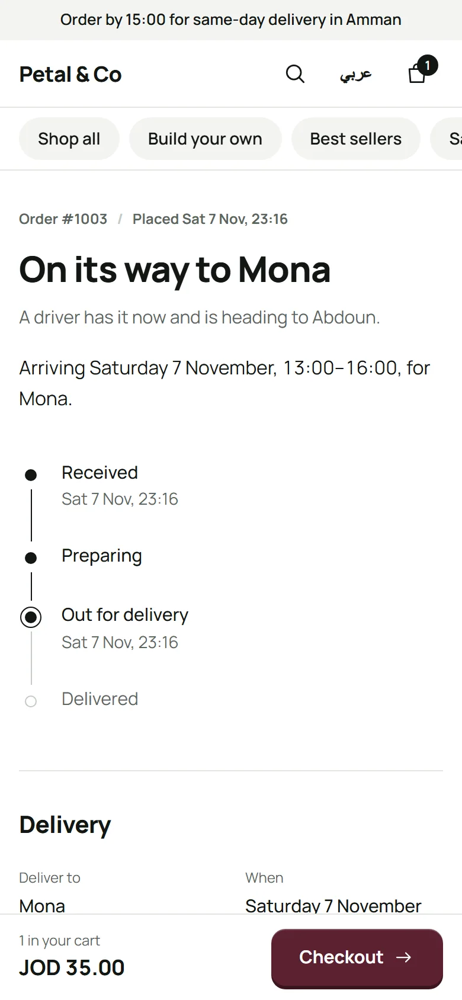
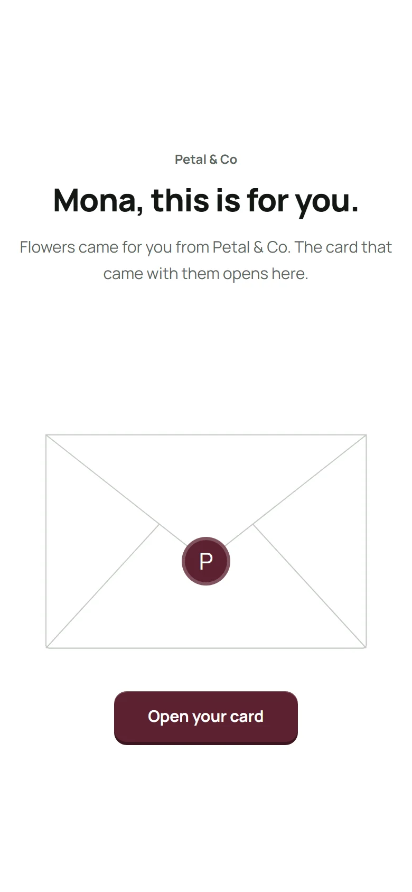

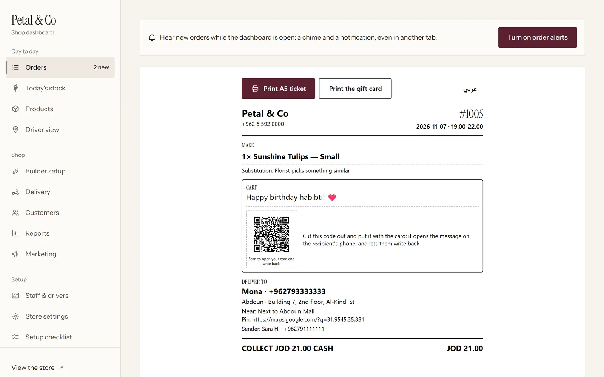
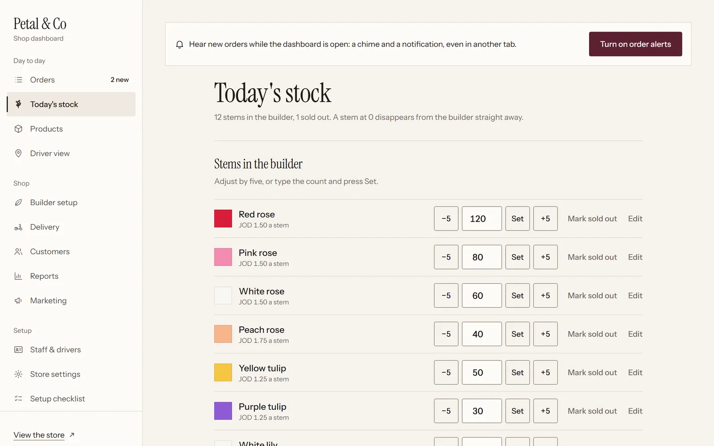
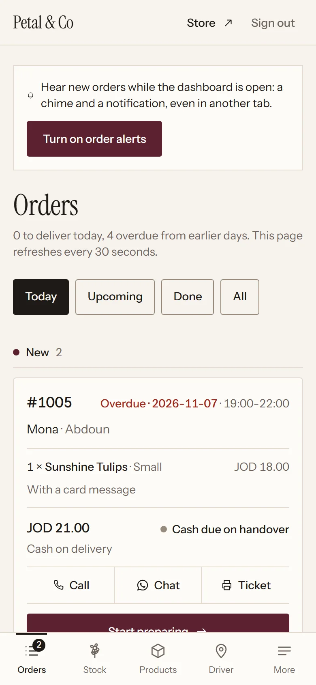
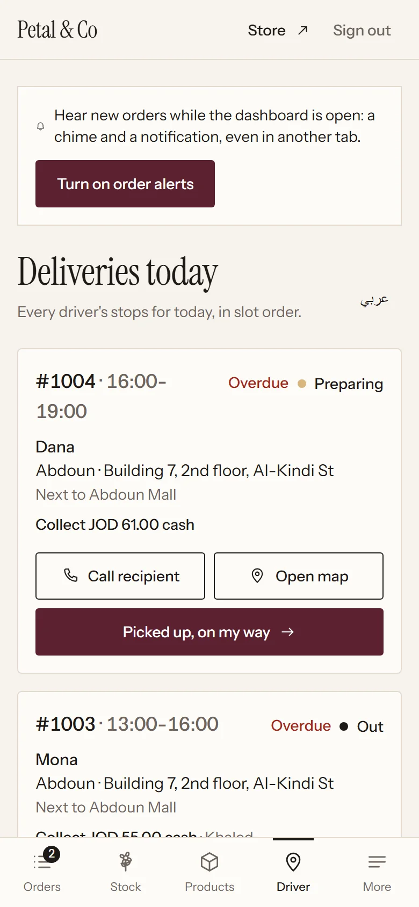
- A new shop is a database row and a DNS record. The shop is read from the request's host, and Postgres row-level security enforces the boundary a second time. Diagram ↗
- delivery slots the shop can actually make, and a private page for whoever receives the flowers.
- and an owner dashboard that works from a phone.
Next.js 16React 19PostgreSQL 17Prisma 7Tailwind 4Docker